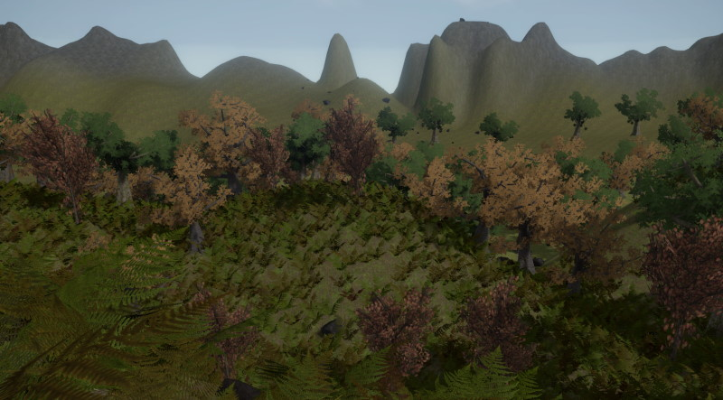

Terrain and Vegetation

Terrain
Currently there are no tools for creating terrain. Terrain meshes are best build in external tools and imported as regular static meshes.
A popular method to represent terrain are heightmaps - 2D grayscale images, where the brightness of each pixel represents the height of the terrain at that location. Plasma Engine provides a heightfield component which enables you to get such terrain data into the engine easily. However, this is only meant for simple use cases.
Vegetation
Vegetation can be created with standard meshes. Using custom visual shaders (TODO), a basic per-vertex wind animation can be applied.